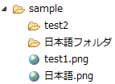

<a href="download_x.php">ファイルをダウンロード</a><br>
<?php
$filepath = 'test/xxx2.zip'; // ダウンロードするファイルのパス
$filename = 'xxx3.zip'; // ダウンロード時のファイル名
header('Content-Type: application/force-download'); // コンテンツタイプを指定する
header('Content-Length: '.filesize($filepath)); // 進捗を表示
header('Content-Disposition: attachment; filename="'.$filename.'"'); // ダウンロード時のファイル名をセット
readfile($filepath); // ファイル読込とダウンロードの実行
?>
<form action="#" method="post">
<?php
if(!empty($_POST)){
echo 'いろは';
}
?>
<br>
<input type="text" name="aaa" value="Form内のテキストボックス"/>← フォーカスしてEnterキーを押すとsubmitが発動する
<input type="submit" name="submit1" value="TEST1"/>
</form>
<input type="text" name="aaa2" value="Form外のテキストボックス"/>← フォーカスしてEnterキーを押してもsubmitは発動しない
<br>
XML用の記号エスケープ関数のソースコード
/**
* XML用の記号エスケープ関数
*
* @note
* 記号「 &<>"' 」をXML用にエスケープする
*
* @param any $data
* @return エスケープ後のデータ
*/
function escapeMarkForXML($data){
if(is_array($data)){
foreach ($data as $key => $v){
$data[$key] = escapeMarkForXML($v);
}
return $data;
}else{
if(gettype($data) == 'string'){
$search = array('&','<','>','"',"'");
$replace = array('&','<','>','"',''');
$data = str_replace($search, $replace, $data);
}
return $data;
}
}
エスケープ前
array (size=2) 'neko' => string '<input />' (length=9) 0 => array (size=3) 0 => string '<>&"'' (length=5) 1 => int 122 2 => array (size=2) 'dog' => string '犬">' (length=5) 'pig' => null
エスケープ後
array (size=2) 'neko' => string '<input />' (length=15) 0 => array (size=3) 0 => string '<>&"'' (length=25) 1 => int 122 2 => array (size=2) 'dog' => string '犬">' (length=13) 'pig' => null
chmod('animal/cat',0777);
chmod('animal/cat/buti-neko.png',0777);
is_fileとfile_existsの違い
file_existsはファイルだけでなくフォルダの存在チェックができる。サンプル

echo is_file('sample/test1.png'); // → 1
echo file_exists('sample/test1.png'); // → 1
echo is_file('sample/test2/'); // → 空
echo file_exists('sample/test2/'); // → 1
日本語のファイル名への対応
is_fileとfile_existsに、そのまま日本語ファイル名（日本語フォルダ名）を渡しても、存在チェックできない。
$fp=mb_convert_encoding('sample/日本語.png', 'sjis', 'utf-8');
echo is_file($fp); // → 1
$dp=mb_convert_encoding('sample/日本語フォルダ/', 'sjis', 'utf-8');
echo file_exists($dp); // → 1
通常は上記の方法で良いが環境によっては、以下の方法で試すことができる。
$fn=mb_convert_encoding($fn, 'sjis', 'utf-8,sjis,euc_jp,jis');
<?php
$data = array(
array('id'=>1,'kind_no'=>1,'name'=>'シリケンイモリ'),
array('id'=>2,'kind_no'=>2,'name'=>'イシカワガエル'),
array('id'=>3,'kind_no'=>3,'name'=>'タイワンカブト'),
array('id'=>4,'kind_no'=>2,'name'=>'フロストガエル'),
array('id'=>5,'kind_no'=>2,'name'=>'リュウキュウアカガエル'),
array('id'=>6,'kind_no'=>4,'name'=>'リュウキュウアオバト'),
array('id'=>7,'kind_no'=>4,'name'=>'ノグチゲラ'),
array('id'=>8,'kind_no'=>3,'name'=>'ヤンバルテナガコガネ'),
);
// データのグループ化
$data = dataGrouping($data,'kind_no');
var_dump($data);
/**
* データのグループ化
*
* @note
* データをグループフィールドでグループ分けする。
* グループ分けすることにより最初の2次元構造から3次元構造に変換される。
*
* @param array $data データ(2次元構造、エンティティの配列）
* @param array $group_field グループフィールド
* @return グループ化したデータ(3次元構造）
*/
function dataGrouping($data,$group_field){
$data2 = array();
foreach($data as $ent){
$group_value = $ent[$group_field];
if(empty($data2[$group_value])){
$data2[$group_value] = array();
}
$data2[$group_value][] = $ent;
}
return $data2;
}
?>
ダンプ出力
array (size=4) 1 => array (size=1) 0 => array (size=3) 'id' => int 1 'kind_no' => int 1 'name' => string 'シリケンイモリ' (length=21) 2 => array (size=3) 0 => array (size=3) 'id' => int 2 'kind_no' => int 2 'name' => string 'イシカワガエル' (length=21) 1 => array (size=3) 'id' => int 4 'kind_no' => int 2 'name' => string 'フロストガエル' (length=21) 2 => array (size=3) 'id' => int 5 'kind_no' => int 2 'name' => string 'リュウキュウアカガエル' (length=33) 3 => array (size=2) 0 => array (size=3) 'id' => int 3 'kind_no' => int 3 'name' => string 'タイワンカブト' (length=21) 1 => array (size=3) 'id' => int 8 'kind_no' => int 3 'name' => string 'ヤンバルテナガコガネ' (length=30) 4 => array (size=2) 0 => array (size=3) 'id' => int 6 'kind_no' => int 4 'name' => string 'リュウキュウアオバト' (length=30) 1 => array (size=3) 'id' => int 7 'kind_no' => int 4 'name' => string 'ノグチゲラ' (length=15)
低速
$list = array();
for($i=0;$i<2000;$i++){
$list = func1($list,$i);
}
function func1($list,$n){
$list[] = $n;
return $list;
}
処理にかかった時間（ミリ秒）
0.11400699615479
高速
$list = array();
for($i=0;$i<2000;$i++){
func2($list,$i);
}
function func2(&$list,$n){
$list[] = $n;
}
処理にかかった時間（ミリ秒）
0.007000207901001
set_time_limit(0);
$sep = getPathSeparator("C:\xampp\htdocs\hello-world");
var_dump($sep);// → 「\」
/**
* ファイルパスやディレクトリパスからパスセパレータを取得する
* @param string $path パス（ファイルパス、またはディレクトリパス）
* @return パスセパレータ。 「/」か「\」
*/
function getPathSeparator($path){
if(empty($path)){
return DIRECTORY_SEPARATOR;
}
if(strpos($path,"/")!==false){
return "/";
}
if(strpos($path,"\\")!==false){
return "\\";
}
return DIRECTORY_SEPARATOR;
}
demo.php
<?php
$param['neko'] = 'cat';
$param['inu'] = 'dog';
echo render($param);
function render($params){
extract($params);
ob_start();
include "template.php";
$html = ob_get_contents();
ob_end_clean();
return $html;
}
template.php
<h1>テンプレート1</h1>
いろはにほへとちりぬるをわかよたれそつねならむ<br>
<?php echo $neko;?><br>
<?php echo $inu;?><br>
<br>
<?php
echo "echo test";
?>
<script>
console.log('script test');
</script>